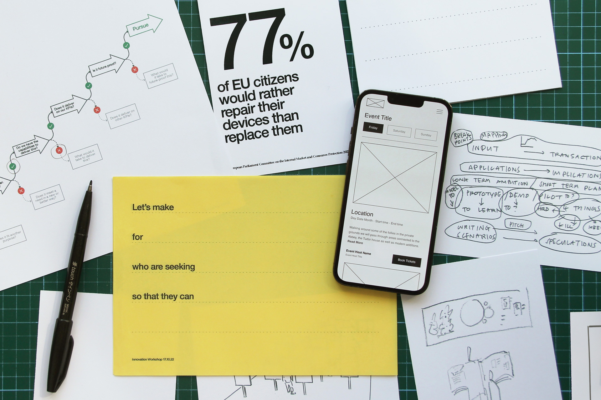
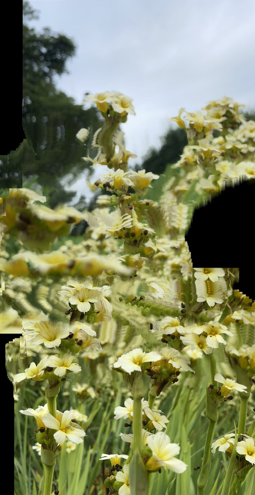

A design & innovation studio creating more meaningful experiences for a rapidly changing world.
2021: We co-created a course with the wonderful Derek Yates to teach innovative approaches to design for extended realities (XR)
2022: Top secret brand innovation project

2022: We led an experience design project for the UK's most innovative public service broadcaster
2022—Ongoing: We've been defining how digital technology creates opportunities for an enhanced future visitor experience
2022: We co-authored a paper with Koray Caliskan from the New School NYC that outlines a new model for understanding complex systems
2021—Ongoing: We've held numerous international talks and workshops, and have been advising UK universities about the future of design education
2021: We co-created a course with the wonderful Derek Yates to teach innovative approaches to design for extended realities (XR)
2022: Top secret brand innovation project
2022: We led an experience design project for the UK's most innovative public service broadcaster
2022—Ongoing: We've been defining how digital technology creates opportunities for an enhanced future visitor experience
2022: We co-authored a paper with Koray Caliskan from the New School NYC that outlines a new model for understanding complex systems
2021—Ongoing: We've held numerous international talks and workshops, and have been advising UK universities about the future of design education

We help ambitious organisations create seamless experiences, reach new audiences and navigate digital transformation.
We specialise in doing this for the arts & culture, media and technology sectors.
Our approach draws on our experience working in multiple design fields and brings shape to a process of continual investigation and craft.
1
Mapping
We map needs, behaviours, dependencies and relationships to create a deep understanding of the context in which challenges and opportunities exist.
2
Modelling
We sketch and model to bring ideas to life — putting the things we make in the hands of the people that matter to learn about the challenges and opportunities they create.
3
Shaping
We shape and refine everything we've discovered, explored and learned into meaningful forms and behaviours to fit the shape of people’s varied needs.
4
Guiding
We create actionable strategic frameworks, detailed production guidelines, and delivery plans to guide the delivery of our work in the context of the worlds they will inhabit.

Founded in 2021 our expertise is built from the depth of our experience — through leadership roles at Google Creative Lab, leading agency teams in London and NYC, and as founders of award winning businesses, profiled by the Design Museum (UK) and the Cooper Hewitt (USA).
We've collaborated with primary school children, cheese producers, FA Cup winners, Michelin Star chefs, sailmakers, neuroscientists, rock stars, human rights lawyers and fashion designers.
Find out more about what we do, discuss a project or just say hi.